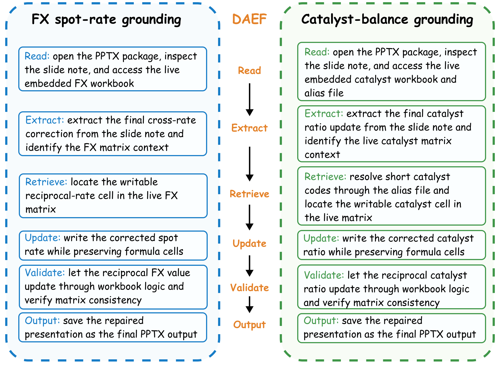

组会文献汇报 · 2026.05
LLM Agent Skill Routing at Scale
SKILLFLOW 与 SkillRouter
SkillRouter — Alibaba Group · arXiv 2026
SkillFlow — USTC · arXiv 2026
当 Skill 注册表膨胀到数万条时，把所有 Skill 塞进上下文已经不现实了。
这两篇论文从不同切口进入同一个问题：一篇用 1.2B 的小模型做大规模路由，
另一篇评测 Agent 能否自己发现并维护 Skill 库。
~80K
SkillRouter Skill 池规模
75 queries
SkillRouter 核心评测集
87 tasks
SkillsBench 评测规模
Paper Metadata
两篇论文基本信息
SkillFlow
arXiv 2026
标题
SKILLFLOW: Benchmarking Lifelong Skill Discovery
and Evolution for Autonomous Agents
作者
Ziao Zhang · Kou Shi · Shiting Huang · Avery Nie · Yu Zeng
Yiming Zhao · Zhen Fang · Qisheng Su · Haibo Qiu · Wei Yang
Qingnan Ren · Shun Zou · Wenxuan Huang · Lin Chen
Zehui Chen · Feng Zhao*（通讯作者）
机构
1中国科学技术大学 · 2University of Toronto
3University of Sydney
核心问题
现有 Agent 基准大多预设了 Skill 已存在，只测"用不用得好"。SKILLFLOW 问的是更上游的问题：
Agent 能不能自己把解题经验写成 Skill，用错了还能修，
并随着任务序列的推进让整个库越来越好用？
核心设计
166 个任务按执行流程分组——而非按领域——形成 20 个 workflow family，横跨 5 个领域。
关键是 DAEF（领域无关执行流）：两个看似不同领域的任务，只要执行步骤相似就算同一 family。
这迫使 Skill 在过程层面迁移，而不只是"都是文档处理"这种表层相似。
SkillRouter
arXiv 2026
标题
SkillRouter: Skill Routing for LLM Agents at Scale
作者
Alibaba Group 研究团队
机构
Alibaba Group
研究问题
在 ~80K Skill 的注册表中，如何高效、低延迟地将任务查询路由到最相关的 Skill 子集？
（大规模 Skill 检索路由，Retrieve-and-Rerank）
项目页
paper.report.md 已在本仓库归档分析
SkillFlow 项目页：zhangzi-a.github.io/SkillFlow-project-page · SkillRouter 详细分析见 paper.report.md
SkillFlow · Benchmark Construction
双智能体构建管线 · 五领域分类 · DAEF 对应
These figures summarize the dual-agent construction pipeline, the
five-domain benchmark taxonomy,
and the DAEF correspondences that let SKILLFLOW study procedural transfer beyond
surface-level domain overlap.
双代理构建流程 · 五域基准分类法 · DAEF 对应关系——使 SKILLFLOW
能够在程序迁移层面（而非主题重叠）衡量能力。
Fig A — Dual-agent construction
pipeline

Fig B — Five-domain taxonomy

Fig C — DAEF correspondences

SkillFlow · zhangzi-a.github.io/SkillFlow-project-page · 166 tasks · 20 workflow families · 5
domains · DAEF = Domain-Agnostic Execution Flow
SkillFlow · Main Findings
六项核心实验发现
Claude Opus 4.6 从 104/166 升至 118/166（+14 道题）。
设一个 history-only 对照组——只是把历史记录喂给模型，不做 Skill 提炼——结果只有 51.04%。
说明那 14 道的增益来自把经验结构化成 Skill，而不只是"上下文变长了"。
一个写坏的 Skill 不只影响当前任务，后续复用它的任务会把同样的错误继承进来，
把局部失败变成序列级的系统性退化。
这意味着修 Skill 的难度和重要性都超过写 Skill 本身。
最强的库不是 Skill 最多的，而是由少数几个被反复修缮的高质量 Skill 组成的。
任务级记忆堆叠得再多也无法弥补单个 Skill 质量差的问题。
F4
Qwen /
MiniMax 存在 Skill 膨胀
部分较弱的设置随着任务推进不断往库里加 Skill，数量几乎单调增长，
但这些新增的 Skill 高度重叠，库增长和性能提升之间的关系断掉了。
Codex 倾向于把相近的变体合并成一个共用的核心 Skill，库保持紧凑。
但整理能力强不等于任务解决能力强，端到端指标没跟上。
任务结束后写出点什么，大多数模型都能做到。
真正的分水岭是：能不能认出哪个 Skill 写错了，
把它改好，然后在后续任务里真的用上这个修复结果。
SkillFlow Main Findings · zhangzi-a.github.io/SkillFlow-project-page · history-only
control = 51.04%
Background · §1 两篇
为什么 Skill Routing 是一个非平凡问题
问题来源
Claude Code、Codex 这类产品已经把 Skill 注册表接入了推理流程。
随着开源社区的 Skill 库突破万级，
把所有 Skill 直接塞进上下文已经不现实——
实验表明无关 Skill 会明显拉低 Agent 表现（Li et al., 2026a）。
一个不对称之处（SkillRouter §1）：
路由系统检索时能看到完整的 Skill body（中位 704 词、P90 达 1,991 词），
但 Agent 推理时通常只能看 name + description 这 21 个词（Table 7）。
这个剪刀差是理解两篇论文设计决策的起点。
难点：大规模重叠
- 80K Skill 跨 51 类别，同一功能被不同作者重复实现
- 候选语义高度重叠，元数据信息密度太低
- 推理延迟有严格服务约束（~500ms 目标）
评测集：SkillsBench (Li et al., 2026b)
- 87 个 expert-curated 任务，229 个匹配 Skill
- SkillRouter 保留 75 条核心 query（去除 generic-only）
- 多技能任务 51/75（68%）：Pipeline / Substitute / Mixed
形式化定义（SkillRouter §2）
给定查询 q 与技能池 S（|S| ≈ 80K），返回 Top-K 子集
Ĝq，优化三项指标：
Hit@1
Rank-1 结果是否命中任意真实 Skill
Recall@K
Top-K 中 GT Skill 的比例
FC@10
全部 GT Skill 均在 Top-10（严格多技能全覆盖）
优化张力：Hit@1（精准率）与 FC@10（全覆盖）之间存在根本性权衡——SkillRouter 在 Hit@1 领先但 FC@10
退步即为例证。
SkillRouter §1–2 · SkillFlow §1 · SkillsBench (Li et al., 2026b) Appendix A · Table 7
Skill Anatomy · SkillRouter §1 · Table 7
一个 Skill 由什么构成？
Skill 三字段结构（SkillRouter
Table 7）
name
技能名称
中位 3 词 · 唯一标识符，如
audio_transcribe_whisper
desc
自然语言描述
中位 18 词 ·
摘要性说明，如 "Transcribe audio files using OpenAI Whisper API"
body
完整实现体
中位 704 词 · P90 达
1,991 词 · 包含代码实现、示例调用、依赖声明、错误处理
Agent 在推理时只看 name + desc（避免上下文爆炸）；
路由系统在检索时访问完整 body——这一非对称是 SkillRouter 的核心工程前提。
两篇论文对 Skill 的不同定义
|
SkillRouter |
SkillFlow |
| 来源 |
外部社区提供，静态工具 |
Agent 自主生成，动态演化 |
| 库更新 |
离线批量索引 |
任务后实时写入/修复 |
| 规模 |
~80K 预存 |
从零构建，随任务增长 |
| 质量控制 |
无（社区原始） |
Architect Agent 审核 |
SkillRouter §1 · Table 7（字段统计）·
SkillFlow §2（Skill 定义与 DAEF 审核标准）
Key Finding · SkillRouter §3 · Figure 1
隐去 body 全文后，路由精度下降 31–44 pp
对三类代表性 baseline 进行消融：全文（name + desc + body）vs 仅元数据（name + desc，记为 nd）。
Easy/Hard 均值结果：
长度控制（Appendix C–D）：注意力诊断显示，name 字段仅占 3.0% token 但在 Layer 19 达到 26.3%
注意力峰值；最终层 body 注意力与 body 绝对长度不相关（r = 0.04）。
GT 描述最长四分位分层控制：nd vs full 差距仍 ≥26pp。


Figure 1 (SkillRouter)：上：三类 baseline nd vs full Hit@1 对比（Easy/Hard 均值）。
下：SR-Rank-0.6B 各层对 name / body 字段的注意力占比，token-share 基准线已标注。
SkillRouter §3 · Figure 1 · Table 9 · Appendix C–D（长度控制与描述质量分层实验）
SkillFlow · §3 · Figure 1
四阶段渐进式检索管线

Figure 1 (SkillFlow)：用户任务经四阶段逐步缩减候选集（1K→100→10→≤5），Retrieved skills 返回给 Agent
用于任务执行。
Stage 0
LLM Query Gen
GPT-4o-mini 生成 M₁=5 条多维查询（域/语言/工具/库抽象层）
在线 LLM ①
Stage 1
Dense Retrieval
BAAI/bge-base-en-v1.5 余弦 ANN
36K → 1,000
通用模型，无微调
Stage 2
Shallow Rerank
MiniLM-L-6 Cross-Encoder，截断至 512 tokens
1,000 → 100
通用模型，无微调
Stage 3
Deep Rerank
BGE-reranker-v2-m3，截断至 4,096 tokens
100 → 10
通用模型，无微调
Stage 4
LLM Selector
GPT-4o-mini 语义相关性过滤，输出可变数量 ≤5
10 → ≤5
在线 LLM ②
90.5%
Retriever Recall@Oracle
SkillFlow §3–4 · Figure 1 · Table
4–5（各阶段延迟细分）· §A.4（超参数消融）
SkillRouter · §4 · Figure 2
两阶段全文 Retrieve-and-Rerank（1.2B 参数）

Figure 2 (SkillRouter)：Bi-Encoder 从 ~80K 池中检索 Top-20，Cross-Encoder 对 20
个候选做 Listwise 重排。
两阶段均使用 Skill 全文（name + desc + body）。
Listwise CE 的必要性（Table 5 消融）：
SR-Rank-0.6B + Listwise CE = 74.0% Hit@1；
替换为 Pointwise BCE = 43.3%（差 30.7pp）。
当 20 个候选全部主题相关时，逐点分类无法在候选间建立相对顺序。
SR-Emb-0.6B（Bi-Encoder 微调）
- 基础模型：Qwen3-Emb-0.6B；37,979 合成 (query, skill) 对
- InfoNCE 对比学习 + 四类硬负例（语义邻居 ×4、BM25 ×3、类别干扰 ×2、随机 ×1）
- 三层假负例过滤：name 去重 → Trigram Jaccard>0.6 → 余弦>0.92；
移除约 10% 挖掘负样本，消融贡献 +4.0pp
SR-Rank-0.6B（Cross-Encoder 微调）
- 基础模型：Qwen3-Rank-0.6B；32,283 条候选列表（每条 20 候选 + 二元标注）
- Listwise Cross-Entropy 损失，对整个候选列表计算排列概率
- 两阶段共 1.2B 参数；推理中位延迟 495.8 ms（vs 16B 基线 5.8× 更慢）
SkillRouter §4 · Figure 2 · Table 5（消融）· Appendix E（负例挖掘细节）· Appendix H（延迟基准，80 query
测量）
SkillRouter §3 · Body Signal Analysis
注意力机制揭示：决策权重 91.7% 在 body 字段
业界普遍假设 name + description（约 21 词）就足以区分 Skill。
但在 ~80K 条、51 个类别的池子里，这 21 个词根本不够用——
同一功能被不同作者以不同名字反复实现，元数据完全无法区分。
注意力诊断（§3，75 query-skill 对）
| 字段 |
Token 占比 |
Layer 19 注意力 |
Layer 27（最终层） |
| name |
3.0% |
26.3%（峰值） |
0.9% |
| description |
0.5% |
1.0% |
1.0% |
| body |
96.5% |
72.0% |
98.1%（决策层） |
中间层 name 短暂激活（26.3%）——模型先定位 Skill 范畴，最终层回归 body 执行精细区分。
body 最终层注意力与 body 绝对长度相关系数 r = 0.04，排除"仅是 token 更多"的解释。
仅元数据路由的真实代价（Easy/Hard 均值）
BM25：full 31.4% → nd 0.0%（差 31.4pp）
Qwen3-Emb-8B：full 64.0% → nd 25.3%（差 38.7pp）
Qwen3-Emb-8B × Rank-8B：full 68.0% → nd 24.0%（差 44.0pp）
Skill 字段规模非对称性（Table 7）
Body 是 Skill 的主体——实现代码、调用示例、依赖声明都在里面；
name + description 更像是"目录条目"，信息量根本不够做细粒度区分。
SkillRouter 的设计选择：检索阶段读完整 body，Agent 推理阶段只看 name + description，
两侧信息不对称——这是有意为之的工程决策，不是限制。
控制实验：Description 质量不是解释（Appendix D）
按 description 长度分四分位，即便在描述最丰富的那组，
去掉 body 后 Hit@1 仍下降 ≥ 26pp。
"是因为 description 写得太短"这个解释被直接排除。
SkillRouter §3 · Figure 1 · Table 9 · Appendix C（注意力诊断）· Appendix D（描述质量分层控制）
SkillRouter §4 · Training Innovations
两项决定性训练适配：假负例过滤 & Listwise 损失
Innovation 1
假负例过滤（FNF）
开源 Skill 生态里同一功能经常被不同作者重复实现，名字各异。
负例挖掘时这类"功能等价的 Skill"就变成了假负样本，
训练时模型反而被要求把真实答案打低——信号被污染了。
三层级联过滤策略
L1
名称去重：Skill name 完全相同者直接剔除
L2
Body 文本重叠：Trigram Jaccard > 0.6 的候选剔除（捕捉代码实现高度相似）
L3
向量余弦相似度：embedding 相似度 > 0.92 的候选剔除（语义高度相近但文字不同）
三层过滤合计移除约 10% 挖掘负样本 → 消融贡献 +4.0pp Hit@1
Innovation 2
Listwise 重排序损失
Bi-Encoder 召回的 20 个候选，通常全都跟任务主题相关——比如查 git 操作，20 个都是 git 工具。
逐点打分时模型对每个候选单独评分，分数互相咬在一起，
最终排序几乎靠运气。
Listwise CE vs Pointwise BCE 消融（Table 5）
差距 30.7pp——在这个设定下，损失函数的选择比模型大小影响更大。
Listwise CE 一次性对 20 个候选排全序，让模型直接比较谁更好，而不是各打各的分。
SkillRouter §4 · Table 5（两项消融完整对比）· Appendix E（假负例过滤实现细节）
SkillRouter §4 · Hard Negative Mining
四类混合硬负例：系统性对抗三种混淆模式
随机负样本无法教会 Encoder 做细粒度区分。每个 query 配 10 个混合硬负例，
系统性覆盖三种混淆模式——这三种混淆恰好都需要访问完整 body 才能区分，与全文访问需求相互强化。
| 类型 |
配比 |
来源与描述 |
对抗混淆 |
| 语义邻居 |
×4 |
Base Encoder 最近邻 Skill——语义相近但功能不同，如多个"text summarizer"变体 |
语义混淆 |
| 词汇匹配 |
×3 |
BM25 高分 Skill——词汇重叠高但功能不同，如都含"audio"的不同工具 |
词汇混淆 |
| 类别干扰 |
×2 |
同 Category 的其他 Skill——类别相同但功能不同，如同为"audio processing"的不同任务 |
类别混淆 |
| 随机 |
×1 |
不同类别的随机 Skill，作为难度锚点，防止训练分布过度偏向困难样本 |
分布校准 |
核心逻辑：语义 / 词汇 / 类别三种混淆都无法仅靠 name + description 区分——必须读取完整 body
才能判断实际功能差异。硬负例设计与全文访问需求相互强化。
训练数据规模
SR-Emb
37,979 合成 (query, skill) 对
GPT-4o-mini 生成查询 ·
分层采样保证类别多样性
SR-Rank
32,283 条候选列表
每条含 20 候选 + 二元相关标注
· 由 SR-Emb 生成
合计 1.2B 参数 · 推理中位延迟 495.8 ms
比 16B 基线快 5.8×（Appendix H，80-query GPU 基准）
SkillRouter §4 · Appendix
E（硬负例挖掘配比）· Table 5（各组件消融）· Appendix H（推理延迟基准）
Design Comparison
两种设计权衡
|
SkillFlow（USTC） |
SkillRouter（Alibaba） |
| Skill 池规模 |
36K（SkillsMP 爬取） |
~80K（SkillsBench + Claude Registry Core） |
| 检索阶段数 |
4 个阶段（含预处理 Query Gen） |
2 个阶段（Bi-Encoder → Cross-Encoder） |
| 在线 LLM |
每任务 2 次（Query Gen + Selector） |
0 次（纯检索推理，无在线 LLM 依赖） |
| 模型微调 |
无（使用通用预训练模型） |
任务特定微调（37K + 32K 合成数据） |
| Skill 全文访问 |
Deep Reranker 截断至 4,096 tokens |
两阶段全程全文，无截断限制 |
| 端到端延迟 |
~35s/任务中位（未作为主要评测指标） |
495.8ms 中位（80-query GPU 基准） |
| 统计检验 |
有（Holm-Bonferroni，padj=0.036） |
主指标差异未报告置信区间或显著性 |
| FC@10 |
未单独报告 |
35.3%，低于 16B 基线 38.2%（−2.9pp） |
SkillRouter §5.1 · Table 3–4 · SkillFlow §4.2 · Table 2–5 · 注：两篇评测集构成不完全一致，数字不可直接比较
Results
两篇论文的核心实验数据
SkillFlow
SkillsBench · 87 tasks · 3 runs
Pass@1（SkillsBench 端到端）
No Skills: 9.2% → SkillFlow: 16.4%（相对提升 +78.3%）
padj = 3.64×10⁻²（Holm-Bonferroni 校正，有统计显著性）
Terminal-Bench — Null Result（§4.3）
SkillFlow 使用率 70.1%（vs Vercel 22.3%，padj<10⁻⁶），
但 Pass@1 无显著提升。
论文结论：当 Skill 库缺乏可执行代码时，检索质量不是主要瓶颈。

Figure 2 (SkillFlow)：Oracle Skill vs Community Skill 结构指标。
Oracle 含可执行代码显著更多（padj=2.83×10⁻¹²），bundled script 概率高
3×（padj=2.83×10⁻¹⁷）；
长度与文档量无显著差异。
SkillRouter
75 queries · ~80K pool · Easy/Hard avg
Hit@1 检索精度（Table 3）
SR 1.2B: 74.0% vs 16B 基线（Qwen3-Emb-8B×Qwen3-Rank-8B）:
68.0%
SR-Emb-0.6B（微调）= 65.4% vs Qwen3-Emb-8B（未微调，13× 参数）= 64.0%
注：SkillBench-Supp（256 query）上差距收窄至 0.004（.641 vs
.637）
端到端代理成功率（Table 6）
No Skills: 14.89% → Gold Oracle: 32.67%
Base Router Top-1: 25.78% → SR 1.2B Top-1: 27.56%（+1.78pp）
⚠ 端到端提升的统计显著性未报告；Agent 能力对路由收益影响显著
（Claude Sonnet/Opus 4.6 获益 +3.22pp，glm-5 仅 +0.89pp）。
⚠ FC@10 退步（Table 4）
SR 1.2B multi-skill FC@10 = 35.3% vs 16B 基线 =
38.2%（−2.9pp）
Hit@1 与 FC@10 之间存在优化张力；51/75 query 为多技能任务。
SkillRouter Table 3–4–6 · SkillFlow Table 1–3 · Figure 2 · 两篇评测集构成不完全相同，直接数字比较需谨慎
SkillFlow · §A.4 · Figure 3
多查询（M>1）提升召回但损害精排 MRR
Query Gen 阶段默认 M₁=5 条查询以提升 Retriever 召回。Figure 3 的消融实验揭示了一个权衡：
↑
Retriever 召回提升：M=5 相比 M=1 在通过率（R@koutput）上有显著提升，
多查询可覆盖更多语义视角（图 c 在某截断点处 M=5 超越 M=1）。
↓
Reranker MRR 退步：M=1 在每个阶段的 MRR 均优于 M>1（图 b）。
多查询引入更多候选会稀释精排阶段的判别能力。
→
最终配置 M₁=5（Retriever）、M₂=M₃=1（Reranker），是召回与精度的工程折中，
并非全局最优（Table A.4 有完整超参数消融）。
与 SkillRouter 形成对比：后者不使用多查询，依赖 Listwise 重排在单一查询下实现候选区分，
将召回质量的保障转移至训练数据质量（硬负例设计）。

Figure 3 (SkillFlow)：(a) 各 M 值相对 M=1 的通过率变化；(b) 各阶段 MRR——M=1 在每阶段均最优；
(c–e) 各阶段 Recall@k 曲线，(c) 中虚线标记 M=5 超越 M=1 的截断点。
SkillFlow §A.4 · Figure 3 · Table A.3–A.4（多查询完整消融）
Open Tensions · Cross-Paper Analysis
两篇论文共同暴露的范式矛盾
矛盾 1
Hit@1 与 FC@10
的根本张力
SkillRouter 优化 Hit@1 后，FC@10 反而从基线 38.2% 退步至 35.3%。
原因在于：ranked list 这个范式本来就不适合"找到一组互补 Skill"的问题。
75 个 query 里有 51 个需要多个 Skill 协同，但两篇论文都在用"排一个列表"的方式回答"选一个集合"的问题——范式和需求之间有根本性的错位。
潜在方向：Set-Based Skill Retrieval
把检索目标从"返回一个排列"改成"返回一个互补集合"。
SkillsBench 已经标注了 pipeline / substitute / mixed 三种 Skill 依赖类型，
可以直接用来训练集合优化模型——比如 Submodular maximization 或 DPP，
让模型知道选出来的 Skill 之间要互补，而不只是各自得分高。
矛盾 2
Body-Visibility
非对称性——谁来弥合？
SkillRouter 论文的核心发现是：路由系统看到的（body，中位 704 词）和 Agent 运行时看到的（metadata，21 词）是两套完全不同的信息。
论文把这个 gap 当作固定的工程约束接了下来，但其实这个 gap 本身是可以被填的。
潜在方向：Routing-Aware Skill Description
Generation
训练一个"描述改写器"：给定完整 body，生成一个在路由精度上最优的 description，
使 metadata-only 场景下路由也不崩。
本质上是把 body 里的判别性信息蒸馏进 21 个词——
副产品是 Agent 对 Skill 的理解也变好了，同时 SkillRouter 不再非要索引全文。
SkillRouter §5.3 · Table 4（FC@10 退步）· §3（Body-Visibility 非对称，Table 7）· SkillsBench
Appendix A（多技能类型标注）
Open Tensions · Cross-Paper Analysis
矛盾 3：静态 Skill 池 vs 动态社区生态
两篇论文都假设 Skill 池静态。但 Claude Skill Registry 这类社区生态在持续增长——当新 Skill 加入时：
SkillRouter 的静态代价
- 需要对新增 Skill 重新向量化全部 body（80K × 中位 704 词）
- 假负例过滤需对新 Skill 重新计算全局相似度（Trigram Jaccard + 余弦）
- 新 Skill 与现有 Skill 的功能重叠无自动检测机制
SkillFlow 的静态假设
- Benchmark Skill 池固定，未测试随社区增长的检索退化
- Agent 生成的 Skill 无跨 Agent 共享机制
- Lifelong 仅在固定 166 任务序列中测量，未延伸至开放任务流
潜在方向：Incremental Routing with Conflict Detection
新 Skill 加入时，主动检测它跟现有 Skill 的重叠（Trigram Jaccard + 余弦相似度，
复用 SkillRouter 假负例过滤的同套逻辑），自动合并、去重或标注冲突，
维护一个动态 Skill 知识图谱，避免每次加新 Skill 就要重索引整个库。
顺带还能把 Skill 之间的显式依赖结构暴露给集合检索层。
这三个矛盾指向同一个方向：Skill Routing 目前还停留在"给一个查询返回一个排列"的简单框架里。
真正需要的是面向集合、支持增量更新的动态检索系统——
目标函数要对，数据结构要能改，更新机制要跟上社区生态的速度。
SkillRouter §1（社区 Skill 生态）· §4 Appendix E（假负例过滤逻辑）· SkillFlow §2（Lifelong 设定）